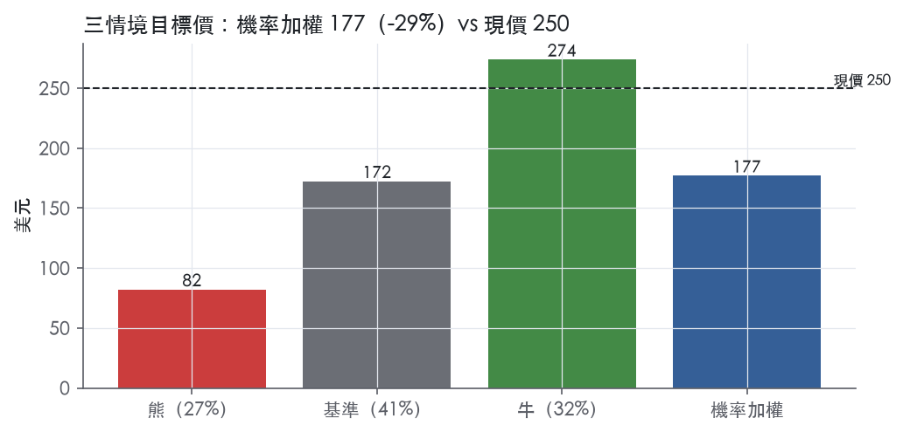
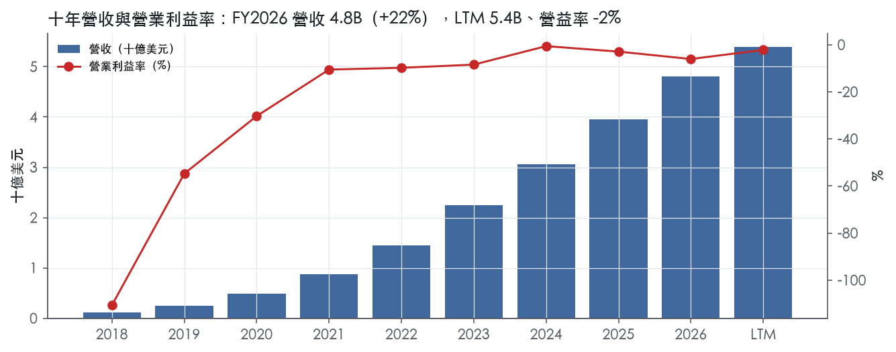
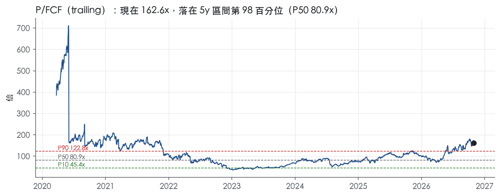
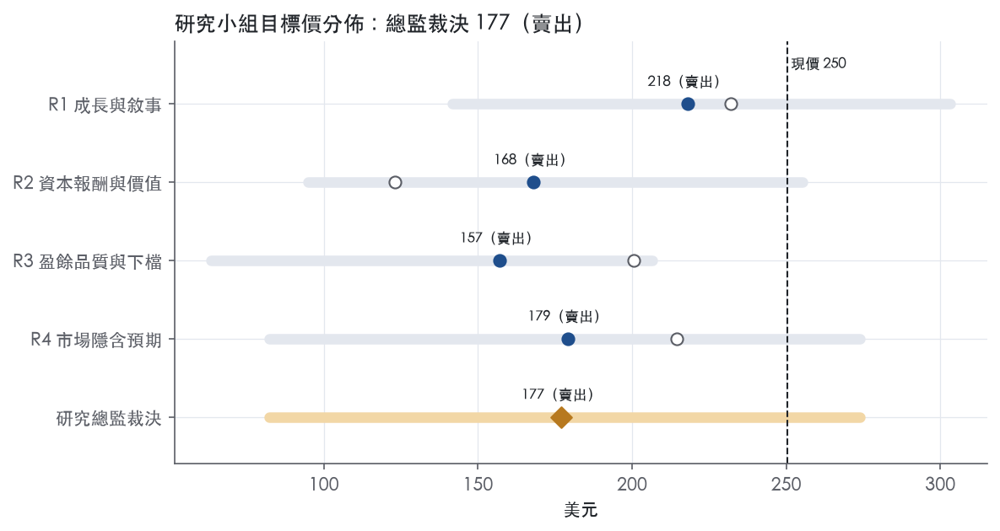
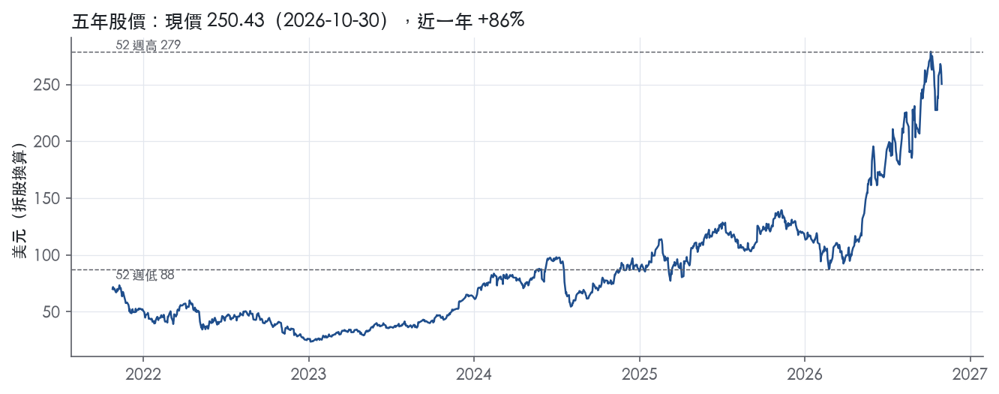

評等總表 › 資訊科技 › CRWD
成長真、倍數過頭：偏空賣出｜評等 賣出｜目標價 177
| 報告日 | 評等 | 目標價 | 當時股價 | 超額報酬 |
|---|---|---|---|---|
| 2026-10-30 | 賣出 | 177 | 250 | -38.8% |
| 評等 | 賣出 |
| 12 個月目標價 | 177 美元 |
| 現價 | 250.43 美元（2026-10-30） |
| 預期報酬 | 股價 -29.3%＋股息 0.0%＝總報酬 -29.3%；同業籃門檻 9.5%，超額 -38.8% |
| 估值方法 | P/FCF 115.0x，套在第 5–8 季的自由現金流（也就是一年後的未來四季） |
| 三情境 | 熊 82／基準 172／牛 274 |
| 研究流程 | 四位研究員兩輪辯論＋研究總監裁決 |
| 資料來源 | SEC EDGAR XBRL、Tiingo、FRED（全免費） |
成長真、倍數過頭：偏空賣出（研究總監裁決，四位研究員兩輪辯論後）
評等 賣出｜12 個月目標價 177 美元（總監三情境機率加權 181 與研究員中位數 174 各半）｜現價 250.43（2026-10-30）
預期報酬：股價 -29.3%＋股息 0.0%＝總報酬 -29.3%。同業籃門檻 9.5%，超額 -38.8%。
估值方法：P/FCF 115.0x，套在第 5–8 季的自由現金流（也就是一年後的未來四季）。三情境：熊 82（27%）／基準 172（41%）／牛 274（32%）。
什麼會讓研究總監改變看法：FY27Q3 淨新增 ARR 年增 ≥40% 且 2027-03 FY28 淨新增 ARR 指引 ≥25%，我把 y2 上調到 24%、倍數往 140x 移並轉中性；反之 ARR 年增率高於訂閱營收年增率 3pp 以上，熊機率上調。
| 過去四季（實際，FY2027Q2） | 未來四季 | 第 5–8 季 | 第 9–12 季 | |
|---|---|---|---|---|
| 營收（B） | 5.4B | 6.7B | 8.2B | 9.5B |
| 營收成長 | 24.3% | 25.0% | 21.0% | 17.0% |
| 營業利益率 | -2.2% | 1.0% | 4.0% | 7.0% |
| EPS（美元） | 0.06 | 0.03 | 0.22 | 0.46 |
| EPS 成長 | — | -49.7% | 616.8% | 108.8% |
| 每股股息（美元） | — | 0.00 | 0.00 | 0.00 |
| P/E（現價） | 4056.2x | 8066.3x | 1125.3x | 538.8x |
| 股息殖利率（現價） | — | — | — | — |
過去四季為申報數字；預測為研究總監的假設、程式計算。倍數與殖利率都用現價計算，用來看現價對應各期獲利的高低。
| 情境 | 機率（歷史） | 故事 | 未來四季營收成長 | 第 5–8 季營益率 | 倍數 | 目標價 | 股價漲跌 |
|---|---|---|---|---|---|---|---|
| 熊 | 27%（27%） | 風險表第 3、4 條與「公司沒寫」第 1 段：Flex 額度消耗低於簽約，ARR 年增率高於訂閱營收年增率 3pp 以上、FY28 淨新增 ARR 指引落至低十位數，成長溢價消失 | 19.0% | 1.0% | 65.0x | 82 | -67.2% |
| 基準 | 41%（41%） | NTM 營收兌現 25%、FY28 面對紀錄基期降到 21%、GAAP 薄利轉正，倍數自 97.8 分位往前瞻帶上緣收斂 | 25.0% | 4.0% | 115.0x | 172 | -31.1% |
| 牛 | 32%（32%） | Flex 與 AI 安全讓淨新增 ARR 續超指引、FY28 淨新增 ARR 指引 ≥25%，市場續付高溢價但仍自現行 trailing 倍數略收斂 | 27.0% | 6.0% | 160.0x | 274 | 9.4% |
目標價由程式依研究總監的驅動與倍數計算；機率由研究總監給定。括號內是歷史頻率：把這檔股票過去十年 12 個月報酬的波動形狀，置中在基準情境，結果落在各情境附近的比例。

四位研究員用不同方法各自估值，回應研究總監的質疑後交出第二輪，最後由總監逐點裁決。各研究員的主張見第七章，裁決理由見第八章，完整論證見《研究底稿》。
| 立場（一輪→二輪） | 加權目標價（一輪→二輪） | 評等（一輪→二輪） | 第二輪倍數 | 熊～牛目標價 | |
|---|---|---|---|---|---|
| R1 成長與敘事 | 看空→看空 | 232→218 | 賣出→賣出 | 34.0x | 142～303 |
| R2 資本報酬與價值 | 看空→看空 | 123→168 | 賣出→賣出 | 25.0x | 95～255 |
| R3 盈餘品質與下檔 | 看空→看空 | 201→157 | 賣出→賣出 | 95.0x | 63～207 |
| R4 市場隱含預期 | 看空→看空 | 214→179 | 賣出→賣出 | 115.0x | 82～274 |
| 研究總監裁決 | 看空 | 177 | 賣出 | 115.0x | 82～274 |
目標價由程式依各自的驅動與倍數計算；評等＝機率加權總報酬 − 同業籃門檻。
CrowdStrike 是一家以 AI-native 雲端平台做端點、身分、雲端工作負載安全的訂閱制網路安全公司。公司成立於 2011 年，建立了業界第一個真正雲原生、以 AI 為核心的 CrowdStrike Falcon 網路安全平台，透過單一輕量化感測器大規模阻止資安入侵¹。公司認為自己定義了一個新品類——AI Security Cloud，其雲端規模 AI 每週關聯、豐富數兆筆資安事件¹。客戶涵蓋全球最大型企業、政府機構與知名品牌，截至 2026 年 1 月 31 日服務超過 88,000 個組織，包含終端客戶及 MSSP 旗下客戶¹。公司明確表示其業務不依賴任何特定終端客戶¹。
CrowdStrike 並未按傳統「分部」拆分財報，而是以單一 Falcon 平台為核心、靠模組數擴張營收（10-K 未揭露分部營收占比）。截至 2026 年 1 月 31 日，Falcon 平台提供 32 個雲端模組，目前已提供 33 個雲端模組，涵蓋企業端點與雲端工作負載安全、託管安全服務、安全與漏洞管理、IT 維運管理、身分保護、新一代 SIEM 與日誌管理、威脅情報服務、資料保護、SaaS 安全姿態管理、SOAR 與 AI 驅動工作流程自動化，以及針對生成式 AI 與 AI 驅動系統的安全防護¹。主要產品線包括端點安全（新一代防毒、EDR/XDR）、雲端安全（執行階段防護、CSPM、ASPM）、曝險管理、Falcon Complete 新一代 MDR 託管偵測回應服務、反敵對行動（威脅狩獵與情報）、身分保護、新一代 SIEM 與日誌管理、生成式 AI 代理（Charlotte AI）、AI 偵測與回應（AIDR）、IT 自動化、SaaS 安全（Adaptive Shield）及資料保護（Falcon Data Protection）¹。訂閱收入占總營收絕大部分：FY2027Q2 訂閱收入 1.40B 美元，占當季總營收 1.47B 美元的約 95%²。公司另有專業服務部門，提供事件回應、鑑識調查、顧問服務與 CrowdStrike University 訓練認證，10-K 未揭露該部分占營收比重¹。平台採模組交叉銷售的擴張模式，公司揭露截至 2026 年 7 月 31 日，訂閱客戶採用 6 個以上模組的比例達 51%，7 個以上為 35%，8 個以上為 26%²，顯示模組深化是營收成長主要驅動力之一。
CrowdStrike 的客戶結構正從大型企業向中小企業與公部門擴張，通路則高度依賴合作夥伴生態系。公司過去與其通路夥伴主要銷售給大型組織，但已日益聚焦於銷售給中小型企業，特別是透過試用轉付費模式¹。美國公部門方面，公司平台已獲多個聯邦機構透過 FedRAMP 授權，國防部組織可依賴 Impact Level 5 臨時授權，美國 50 州中已有 25 州在企業層級標準化採用 CrowdStrike 平台¹。國際營收由 FY2025 的 1,270.7M 美元成長至 FY2026 的 1,595.4M 美元，增幅 26%¹，顯示海外布局持續擴張但仍為美國市場為主。通路上，公司採取夥伴優先的市場策略，透過經銷商、MSP、MSSP 及全球系統整合商（GSI）銷售，並透過 AWS Marketplace、Google Marketplace，自 FY2027 起加入 Microsoft Marketplace 銷售 Falcon 平台¹。客戶黏著度指標為美元留存率，截至 2026 年 1 月 31 日的以美元計淨留存率為 115%¹。
過去四季（FY2026Q3 至 FY2027Q2）CrowdStrike 營收成長持續加速、獲利能力穩健改善。FY2026Q3（2025-10-31）營收 1.23B 美元，年增 22.2%，毛利率 75.1%（is.revenue、dv 相關 fact: FY2026Q3 列）。FY2026Q4（2026-01-31）營收 1.31B 美元，年增 23.3%，營益率轉正至 1.1%，GAAP 淨利由虧轉盈至 0.06B 美元（FY2026Q4 列）。FY2027Q1（2026-04-30）總營收 1.39B 美元，較去年同期 1.10B 美元成長 26%，訂閱收入 1.32B 美元成長 26%，ARR 年增 24% 至 5.51B 美元，當季新增 ARR 達 255.8M 美元創 Q1 紀錄，GAAP 營運虧損 30.6M 美元、Non-GAAP 營運利益 325.7M 美元，營運現金流 590.9M 美元、自由現金流 468.5M 美元均創紀錄³。公司同時宣布四合一股票分割³。FY2027Q2（2026-07-31）總營收 1.47B 美元，年增 26%，訂閱收入 1.40B 美元年增 27%，ARR 年增 25% 至 5.84B 美元，當季新增 ARR 333M 美元創紀錄，年增率加速至 51%，Falcon Flex 相關 ARR 已超過 2.29B 美元、年增 101%，GAAP 淨利翻正至 5.3M 美元，Non-GAAP 營運利益 371.6M 美元，營運現金流與自由現金流分別創 Q2 紀錄達 530.3M 美元與 377.4M 美元²。公司將 FY27 第三季營收指引設定於 1,523.2M–1,529.2M 美元區間，全年營收指引上調至 5,991.1M–6,011.1M 美元，同時將全年新增 ARR 成長率指引上調 630 個基點至中位數 34%²。
CrowdStrike 自述的成長策略包含五大支柱：第一，透過取代既有與其他端點安全產品擴大客戶基礎，持續投資通路夥伴計畫及 Falcon Go 免費試用，並日益與 MSP/MSSP 合作¹。第二，深化既有客戶滲透，靠在既有環境中部署更多端點並交叉銷售更多雲端模組，公司以 115% 的以美元計淨留存率證明此land-and-expand策略的威力。第三，利用單一數據模型與開放雲端架構進入新市場，快速部署新雲端模組（如 Falcon Discover 擴展至資產管理等非安全用途）¹。第四，拓寬客戶群至各規模組織，包括自 2018 年推出的 Falcon Complete 一站式解決方案，服務內部安全專業能力有限或無的客戶¹。第五，拓展美國公部門垂直市場及國際版圖，公司持續投資聯邦政府、州政府、地方政府及高等教育客群，同時擴大歐洲、中東、亞太（含日本）的海外營運與資料中心¹。管理層在最近法說中將 Falcon Flex 消費制模式與 AI 安全（Charlotte AI、AIDR、Project QuiltWorks 與 OpenAI/Anthropic 的合作）列為下一波成長引擎，CEO 稱「每個企業都將運行在 AI 上，而保護它是我們史上最大的市場機會」²。
就我方判斷，CrowdStrike 的成長敘事已從單純端點防護轉向平台化＋AI 代理化安全消費模型（Falcon Flex），且近兩季 ARR 成長加速、現金流紀錄頻出，顯示平台擴張與獲利槓桿同步兌現。模組深化（6 個以上模組採用率達 51%）與 Falcon Flex ARR 翻倍成長是觀察公司能否維持兩位數以上淨新增 ARR 成長的關鍵先行指標。風險在於估值已反映高成長預期（EV/Sales 47.7x 處於五年 97% 分位），任何成長或留存率不如預期的訊號都可能引發估值重定價。

CrowdStrike 有窄護城河，趨勢穩定。轉換成本與公部門授權有具體證據，但公司沒有任何一年 GAAP 營業利益為正，我們沒有把握 ROIC 能在寬護城河要求的年限內穩定高於資本成本。
轉換成本是證據最硬的來源，授權資格次之，網路效應只能算弱證據。
成本優勢與效率規模缺乏可驗證的證據，不列入。
毛利率支持轉換成本與定價力；ROIC 數字跟營業利益率互相矛盾，整體只撐得起窄、撐不起寬。
最大的威脅是可靠度事件與平台綑綁競爭，兩者都直接打在轉換成本這個主要來源上。
目標倍數相對同業可以溢價，但溢價的依據應該是毛利率與留存率支撐的成長持續性，而不是 ROIC，也不應假設溢價能維持超過窄護城河的期間。目前 EV/Sales 47.7x、P/FCF 162.6x 分別位於五年 97.1% 與 97.8% 分位，都已高於五年 P90 的 35.7x 與 122.8x，建議以五年中位數附近加上有限溢價來定錨，不要沿用現在的水準。用 FCF 倍數時應先扣除 SBC（FY2026 SBC/營收 22.8%，資料包年度表），否則會高估護城河實際產生的可分配現金。
| 指標 | 最新 | 十年平均 | 標準差 | 最低 | 最高 |
|---|---|---|---|---|---|
| ROIC | 164.7% | 55.3% | 52.0% | 2.9% | 164.7% |
| 毛利率 | 74.7% | 70.6% | 6.5% | 54.1% | 75.2% |
| 營業利益率 | -6.1% | -26.0% | 34.0% | -110.7% | -0.6% |
| FCF 利潤率 | 27.2% | 10.9% | 33.4% | -68.8% | 34.7% |
| ROE | -4.2% | -16.3% | 39.3% | -111.5% | 32.7% |
程式計算。資本成本代理值（10 年債＋5%）：10.0%；ROIC 平均減資本成本：45.3%；ROIC 有資料的 6 年中，高於資本成本 5 年。
CrowdStrike的GAAP淨利長期在盈虧線附近震盪（FY2024淨利0.07B、FY2025為-0.02B、FY2026為-0.16B），但營業現金流與自由現金流持續成長（CFO由FY2024的1.17B升至FY2026的1.61B，FCF由0.99B升至1.31B）【資料包年度表】。盈餘品質計分表顯示應計比率十年平均為-22.1%、LTM為-16.8%，代表會計盈餘其實比現金流還保守，沒有應計堆高盈餘的跡象【量化底稿】。真正的問題不是現金轉換，而是GAAP淨利被SBC、無形資產攤銷、July 19 Incident相關費用等非現金或一次性項目大幅侵蝕，使得「淨利」這個分母本身太小，任何比率（含利息保障、CFO/NI倍數）都會被放大或扭曲。
現金持續跑在盈餘前面，而不是落後。計分表現金轉換三項（CFO/NI、FCF/NI、應計比率）LTM與十年平均全部是綠燈，LTM的CFO/NI達34.5x、FCF/NI達27.5x【量化底稿】，這種誇張倍數不是現金品質異常好，而是分母（淨利）本身接近零，稍有風吹草動倍數就會暴衝。看絕對金額比較有意義：FY2027Q2單季CFO為530.3M、FCF為377.4M，均為該季歷史新高²，且逐季穩定爬升（FY2026Q1 CFO 0.38B→FY2027Q2 CFO 0.53B）【資料包八季表】。應收帳款成長與營收成長的落差（FY2026為-1.0pp）也是綠燈，顯示營運資金沒有在吃盈餘【量化底稿】。整體看，現金面是這份報表最可信的部分。
差距非常大，且主要來自SBC。FY2027Q2，GAAP營業虧損33.2M，非GAAP營業利益371.6M；GAAP歸屬淨利5.3M，非GAAP歸屬淨利322.9M，每股從GAAP的0.01美元跳到非GAAP的0.31美元²。公司列出的非GAAP排除項目包括：股權薩勞酬及相關雇主薪資稅、收購無形資產攤銷（含已購專利）、收購相關費用（credit）、債務發行成本與折價攤銷、遞延薪酬負債按市值調整、法律訴訟和解費用、July 19 Incident相關成本（回收）、策略計畫相關費用、策略性投資損益、遞延薪酬資產損益²。這一長串裡，我認為SBC是真實的經濟成本，不該被完全加回——它持續稀釋股東並佔營收超過二成，是本章給中等（而非高）評級的主要原因。July 19 Incident相關費用、法律訴訟和解、策略計畫費用屬性較接近一次性，可以合理打折，但公司並未在新聞稿揭露這部分的具體金額，無法逐項量化。攤銷費用是真實的併購成本分攤，長期而言也會持續存在，只是現金面已付出，不應視為純粹口徑問題。
資產負債表很乾淨，淨負債是負值（即淨現金），完全沒有槓桿壓力。公司淨負債為-4.27B（即淨現金）【資料包快照 】，EV僅257.30B，略低於市值261.57B，差額正是這筆淨現金【資料包快照】。FY2027Q2現金為5.01B，總債務僅0.75B【資料包八季表】，顯示債務規模遠小於帳上現金，公司幾乎是零槓桿公司。股東回饋方面，計分表顯示（股利+回購）/淨利十年平均為-1.7%、LTM與近三年未提供數字（—）【量化底稿】，代表公司幾乎沒有配息或顯著回購，現金留在表內用於再投資與併購（新聞稿提及同意收購XM Cyber技術資產）²。這不算資本配置的紅旗，而是成長階段公司的正常選擇。
SBC／營收紅燈（LTM 22.8%，近三年平均21.9%，十年平均18.1%）：這是真問題，不是一次性，也不是口徑誤差。SBC佔營收比例從FY2018的10.4%一路爬升到FY2026的22.8%，趨勢是上升而非收斂【資料包年度表】，且公司新聞稿明確把SBC列為非GAAP主要排除項目之一²，代表這部分成本每年都在發生、也每年都被管理層自己剔除在「調整後」盈餘之外。本章不加回SBC，視為真實經濟成本，是本章把品質評級定在「中」而非「高」的關鍵原因。
利息保障倍數紅燈（LTM -4.48x，近三年平均-5.21x，十年平均-90.9x）：這是會計口徑造成的假警報，不是償債風險。公司淨負債為負（淨現金-4.27B），FY2027Q2現金5.01B遠高於總債務0.75B【資料包快照、八季表】，實質上幾乎無息負債壓力。負的利息保障倍數完全是因為分子（營業利益）在多數期間接近零或為負（FY2026營益率-6.1%、FY2027Q2為-2.3%）【資料包年度表、八季表】，公式上一除就會變成誇張的負值或負負相除的巨大負數，不代表付息能力真的惡化。這條紅旗可以解釋，不影響估值。
淨利率FY2018→FY2019跳動+58pp、FY2019→FY2020跳動+27pp、FY2020→FY2021跳動+19pp：這三段跳動發生在公司營收規模從0.12B快速放大到0.87B的早期成長階段（FY2018→FY2021營收成長逾7倍）【資料包年度表】，符合SaaS公司規模化後固定成本攤薄、虧損率收斂的典型軌跡，而非單一一次性收益造成。提供的10-K節錄並未包含Item 7 MD&A對應期間的逐項財務分析文字，故無法逐項引用公司對這些跳動的官方解釋，僅能從年度營收與營益率趨勢佐證屬結構性改善而非異常。
淨利率FY2023→FY2024跳動+11pp：FY2024淨利由FY2023的-0.18B轉正為0.07B，營益率由-8.5%收窄到-0.6%【資料包年度表】，方向與前述規模化邏輯一致。但值得注意的是，FY2025、FY2026淨利又回落為負（-0.02B、-0.16B），而這段期間正好跨越2024年7月19日的July 19 Incident，10-K前言明確把該事件、客戶補償方案（customer commitment packages）列為持續影響財務結果的風險項目⁴。本章判斷FY2025–FY2026 GAAP淨利的疲弱，部分反映該一次性事件的餘波成本，而非營運本質惡化，但公司未單獨揭露該事件的具體財務影響金額，無法量化拆分。
稀釋股數年變動黃燈（LTM 1.3%，近三年平均2.4%，十年平均37.3%）：十年平均的異常高值主要來自FY2019到FY2020股數從0.18B跳升到0.59B（IPO及隨後股權獎酬大量發行所致）【資料包年度表】，是上市初期的一次性結構因素，不代表目前仍在快速稀釋。近三年與LTM的數字已降到2–3%區間，屬可接受水準。
估值應該以GAAP盈餘為主要基準，非GAAP數字只能當營運現金產生能力的參考，不能直接套用在P/E上。SBC不應加回，因為它是持續性、且佔營收超過二成的真實稀釋成本，估值模型若用非GAAP EPS（如FY27guidance的1.25–1.26美元）²去算倍數，會嚴重低估真實股東成本，應對盈餘打折。槓桿不是問題——淨現金部位意味著資本結構不會限制估值倍數，EV/Sales 47.7x、P/FCF 162.6x的高倍數（位於5年分位數97%以上）完全是成長溢價問題，而非資產負債表風險的折價問題【資料包trailing倍數帶】。
| 項目 | LTM | 近三年 | 十年 | 燈號 | 規則 |
|---|---|---|---|---|---|
| 營業現金流／淨利 | 34.5x | -28.1x | -10.7x | 綠 | ≥1.00x 綠、<0.80x 紅 |
| 自由現金流／淨利 | 27.5x | -22.8x | -8.50x | 綠 | ≥0.90x 綠、<0.60x 紅 |
| 應計比率（(淨利−CFO)／平均總資產） | -16.8% | -18.3% | -22.1% | 綠 | ≤0.0% 綠、>5.0% 紅 |
| SBC／營收 | 22.8% | 21.9% | 18.1% | 紅 | ≤3.0% 綠、>8.0% 紅 |
| 淨負債／EBITDA | — | — | — | — | ≤1.50x 綠、>3.00x 紅 |
| 利息保障倍數（營業利益／利息） | -4.48x | -5.21x | -90.9x | 紅 | ≥8.00x 綠、<3.00x 紅 |
| 稀釋股數年變動 | 1.3% | 2.4% | 37.3% | 黃 | ≤0.0% 綠、>3.0% 紅 |
| （股利＋回購）／淨利 | — | — | -1.7% | — | ≥50.0% 綠、<0.0% 紅 |
| 應收帳款成長 − 營收成長（FY2026） | -1.0pp | — | — | 綠 | ≤5pp 綠、>15pp 紅 |
程式計算；燈號以 LTM（無則近三年平均）判定。
| 風險 | 觸發指標（看什麼數字、在哪裡看） | 對 EPS 的影響方向與粗略幅度 | 未來 12 個月發生機率 | 出處 |
|---|---|---|---|---|
| July 19 Incident 持續影響業務、客戶關係與訴訟成本 | 季報揭露的客戶賠償/commitment package 費用；8-K／10-Q 中訴訟進展與和解金額公告 | 方向：負；公司未揭露具體金額 | 高 | 10-K 年報 FY2026 Item 1A（風險因素） |
| SBC 占營收比例過高，GAAP EPS 遠低於 Non-GAAP，結構性稀釋獲利能見度 | 季度 SBC/營收比率（10-Q）、加權稀釋股數變化 | 方向：負；FY2026 SBC/營收 22.8%，FY2027Q2 GAAP EPS 0.01 遠低於 Non-GAAP EPS 0.31 | 高 | ²＋ |
| 估值倍數處於歷史高位，ARR／營收 guidance 稍有不如預期即觸發倍數重定價 | 每季 ARR 年增率、net new ARR 是否達成 guidance 中位數（8-K） | 方向：對 EPS 本身影響小，但對股價倍數衝擊大；EV/Sales 現為 47.7x，位於 5 年 97.1% 分位，P/FCF 162.6x 位於 97.8% 分位 | 中 | 量化底稿（band.ev_sales、band.p_fcf） |
| 客戶留存與模組交叉銷售放緩，land-and-expand 動能減弱 | 美元淨留存率（10-K/10-Q）、6 個以上模組採用率（8-K，現為 51%） | 方向：負；公司未揭露放緩對 EPS 的具體幅度 | 中 | ¹＋² |
| 市場競爭激烈，可能侵蝕定價權與銷售效率 | 銷售與行銷費用率變化（財報）、新競爭者公告 | 方向：負；公司未揭露幅度 | 中 | 10-K 年報 FY2026 Item 1A（風險因素） |
July 19 Incident 是公司自己在風險摘要第一條就列出的風險，原文明確寫「The July 19 Incident has had, and is expected to continue to have, an adverse effect on our business, sales, customer and partner relations, reputation, results of operations and financial condition」⁵。公司並未在本次拿到的段落揭露具體金額，但既然公司自己承認「持續」有負面影響，就代表尚未完全出清，後續每一季的客戶賠償/commitment package 支出與訴訟進度都該被追蹤。這條排第一，是因為它同時打到營收（客戶流失）、成本（法務與補償）、與品牌信任三個面向。
SBC 與 GAAP/Non-GAAP 落差是結構性、幾乎確定會持續的風險，不是「萬一發生」的尾部事件，所以機率標高。FY2026 全年 SBC 占營收 22.8%，且這個比例從 FY2018 的 10.4% 一路墊高，沒有回落跡象。最直接的證據是 FY2027Q2：GAAP 淨利僅 5.3M 美元、GAAP 稀釋 EPS 0.01，而 Non-GAAP 淨利 322.9M 美元、Non-GAAP EPS 0.31²——兩者差距近 32 倍。只要市場開始用 GAAP 指標而非 Non-GAAP 指標給估值（例如利率環境轉差、資金轉向重視真實獲利），目前 trailing P/E 4056.2x 這種已經高度失真的倍數會立刻變成股價的致命傷。
估值倍數高位本身不是會動到 EPS 的風險，而是會動到「EPS 乘數」的風險，但對股價衝擊可能比任何基本面風險都大，所以仍列入前五。EV/Sales 現值 47.7x，位於過去 5 年 97.1% 分位；P/FCF 162.6x，位於 97.8% 分位。公司 FY27 全年 ARR guidance 中位數已上修至 34% 成長²，意味著市場預期已經很高，任何一季 net new ARR 不如 guidance（例如像 Q2 的 333M 美元這種紀錄數字無法重複），都可能被解讀為成長見頂，觸發倍數收縮。
留存與模組擴張放緩是公司增長模型的核心引擎，一旦鬆動影響最直接。公司明確表示成長策略第二支柱就是「深化既有客戶滲透」，並以 115% 的美元淨留存率作為證明¹；最新一季模組採用率（6 個以上模組）為 51%、7 個以上 35%、8 個以上 26%²。這些比率若連續下滑，代表 land-and-expand 動能減弱，直接衝擊 ARR 與未來訂閱營收，但公司未揭露敏感度數字，無法估算具體 EPS 影響幅度。
競爭是 10-K 風險摘要中明確列出的一項：「We face intense competition and could lose market share to our competitors, which could adversely affect our business, financial condition, and results of operations」⁵，且 10-K 正文列出七大類競爭對手，包括傳統防毒、替代端點安全商、網路安全廠商、雲安全廠商、身分安全廠商、專業服務商與傳統 SIEM 廠商¹。競爭本身不是新鮮事，但隨著 Falcon Flex 與 AI 安全成為新戰場，若對手在定價或 AI 功能上取得突破，銷售與行銷費用率可能被迫上升以保留市占，侵蝕利潤率。
Falcon Flex 消費制模式快速放量（ARR 已逾 2.29B 美元、年增 101%²），但這種彈性額度消費模式的收入認列時點與傳統訂閱制不同，若客戶實際消耗速度低於簽約額度，ARR 與實際認列營收可能出現落差，公司尚未在財報中提供足夠細節讓外部驗證兩者是否同步。
稀釋股數持續墊高（由 FY2021 的 0.87B 股增至 FY2026 的 1.00B 股），疊加前述高 SBC 比例，代表即使 Non-GAAP 獲利持續成長，每股實質稀釋的速度也在加快，這是公司風險章未單獨列出、但會長期壓低每股價值成長速度的結構性因子。
現價 250.43 對應 trailing（過去四季）P/E 4056.2x、EV/EBITDA —、EV/EBITA —、EV/Sales 47.7x、FCF 殖利率 0.6%。主要估值倍數 P/FCF 現在 162.6x，落在5 年區間第 98 百分位（P10／P50／P90 = 45.4x／80.9x／122.8x）。

把程式的機械基準預測放到現價下，市場付的前瞻倍數是：P/FCF（未來四季） 339.2x、P/FCF（第 5–8 季） 315.1x。反推 DCF 顯示市價隱含未來五年營收年成長 150.0%（WACC 9.0%、終值成長 3.0%、FCF 利潤率 -9.1%，SBC 不加回）。
| 倍數 | 現在 | 5 年 P10 | 5 年 P50 | 5 年 P90 | 現在分位 | 全期 P50 |
|---|---|---|---|---|---|---|
| P/E | 4056.2x | — | — | — | — | 838.8x |
| EV/EBITA | 52456.2x | — | — | — | — | 3018.7x |
| EV/EBIT | 2432.1x | — | — | — | — | 2429.9x |
| EV/Sales | 47.7x | 13.5x | 23.8x | 35.7x | 97.1% | 24.5x |
| P/S | 48.5x | 14.3x | 24.7x | 36.5x | 97.1% | 26.1x |
| P/FCF | 162.6x | 45.4x | 80.9x | 122.8x | 97.8% | 93.1x |
trailing 倍數（股價 ÷ 過去四季）；分位以每個交易日計算。
同業籃：PANW, FTNT, ZS, NET, S（手動名單（playbooks/peers.yaml））。評等門檻 9.5%：同業「倍數不變下持有一年」的隱含報酬中位數（＝ FCF 殖利率 ×(1＋g)＋g，g 為 5 年營收年複合成長並夾在 −2%～8%），每家夾在 0～15%、P/E 低於 5 倍視為資料可疑而排除，中位數再限制在 10 年債到 10 年債＋5% 之間。
| 代號 | 市值 | 5 年營收 CAGR | 營益率 | ROIC | P/E | 5 年 P/E 中位數 | EV/EBITDA | P/FCF | 隱含報酬 |
|---|---|---|---|---|---|---|---|---|---|
| CRWD | 261.6B | 40.6% | -2.2% | 164.7% | 4056.2x | — | — | 162.6x | 8.7% |
| PANW | 298.2B | 22.0% | 6.1% | — | 745.3x | — | — | 72.5x | 9.5% |
| FTNT | 100.0B | 21.3% | 33.0% | -518.6% | 44.4x | 48.4x | 35.0x | 29.1x | 11.7% |
| ZS | 38.8B | 37.9% | -4.0% | — | — | — | — | 45.5x | 10.4% |
| NET | 99.5B | 38.1% | -14.1% | — | — | — | — | 285.5x | 8.4% |
| S | 8.6B | 60.8% | -29.5% | — | — | — | — | 151.9x | 8.7% |
| 同業中位數 | 37.9% | -4.0% | -518.6% | 394.9x | 48.4x | 35.0x | 72.5x | 9.5% |
全部 trailing，程式以各公司 SEC XBRL 與 Tiingo 行情計算；第一列為本檔。
事後實現前瞻倍數帶（P/FCF，2019-07-25..2025-09-17）：P10／P50／P90 = 28.7x／60.5x／94.9x。它是每個交易日的股價除以之後四季實際實現的指標；一年後，今天的第 5–8 季正是那時的未來四季，所以這條帶是 12 個月目標價的同口徑倍數。因為用的是事後實際而非當時預期，過去成長超乎預期的公司這條帶會偏低。
程式的機械基準（成長率從過去四季年增率三年收斂到 6%、利潤率持平）用 事後實現前瞻 P/FCF P50 估值得到 48（-80.8%），市場現行前瞻倍數（現價 ÷ 基準 未來四季指標）一年後持平，套在基準 第 5–8 季指標得到 258。這兩個數字只是參考點，不是本報告的目標價；研究員對這個定價的回應在第七章。
下表是每位研究員第一輪（各自獨立）與第二輪（回應研究總監的質疑後）的結果。目標價全由程式依各自的假設計算。
| 立場（一輪→二輪） | 加權目標價（一輪→二輪） | 評等（一輪→二輪） | 第二輪倍數 | 熊～牛目標價 | |
|---|---|---|---|---|---|
| R1 成長與敘事 | 看空→看空 | 232→218 | 賣出→賣出 | 34.0x | 142～303 |
| R2 資本報酬與價值 | 看空→看空 | 123→168 | 賣出→賣出 | 25.0x | 95～255 |
| R3 盈餘品質與下檔 | 看空→看空 | 201→157 | 賣出→賣出 | 95.0x | 63～207 |
| R4 市場隱含預期 | 看空→看空 | 214→179 | 賣出→賣出 | 115.0x | 82～274 |
| 研究總監裁決 | 看空 | 177 | 賣出 | 115.0x | 82～274 |
目標價由程式依各自的驅動與倍數計算；評等＝機率加權總報酬 − 同業籃門檻。
分歧度：第一輪 加權目標價 123～232（區間＝現價的 44%）· 倍數 38～130x · 立場 看空×4（方向一致）；第二輪 加權目標價 157～218（區間＝現價的 24%）· 倍數 25～115x · 立場 看空×4（方向一致）。

| 研究員 | 第二輪主張 | 堅持的理由 |
|---|---|---|
| R1 成長與敘事 | 偏空，企業價值營收比 34 倍，介於五年中位數與上緣之間。 | 營收成長 24%、21%、17% 不上調；模型自由現金流缺遞延收入，不用現金流倍數。 |
| R2 資本報酬與價值 | 偏空，企業價值營收比 25 倍，貼近五年中位數。 | 換尺不換位置；倍數在 97 分位，回到中位數主要靠股價修正。 |
| R3 盈餘品質與下檔 | 偏空，自由現金流倍數 95 倍，貼著歷史前瞻倍數上緣。 | 股票酬勞占營收 22.8% 是真實成本；Flex 實際消耗未揭露，要打折。 |
| R4 市場隱含預期 | 偏空，自由現金流倍數 115 倍，高於歷史前瞻倍數上緣。 | 不為抵銷現金流下修調高倍數；熊情境保留 65 倍，因成長跌出歷史區間。 |
每位研究員的逐條回應與完整論證見《研究底稿》（CRWD_研究底稿_2026-11-01.docx）。
| 分歧點 | R1 | R2 | R3 | R4 | 什麼資料會分出勝負 |
|---|---|---|---|---|---|
| ① Q5–Q8 營收成長（續航） | 21% | 18% | 24% | 21% | 2026-12 FY27Q3 淨新增 ARR 年增率；2027-03 FY28 淨新增 ARR 指引中位數（≥25% 判 R3，<20% 判 R2） |
| ② D&A／營收 | 不進尺 | 1.5% | 3.0% | 2.0% | FY2027 10-K 現金流量表 D&A 列 |
| ③ 倍數尺與位置 | 34x sales@ntm（5y P90 之下） | 25x sales@ntm（5y P50） | 95x fcf@q5_q8（事後帶 P90） | 115x fcf@q5_q8（P90 之上補口徑） | 10-Q 遞延收入變動：CFO 與「淨利＋SBC＋D&A－資本支出」的缺口是否持續 |
| ④ GAAP 營益率路徑 | 不進尺 | 2／5／8% | 2／5／8% | 1／4／7% | 2027-03 FY27Q4 GAAP 營益率；July 19 費用是否再出現 |
| ⑤ 熊情境定義 | 24x sales→142（風險 1＋Flex） | 16x sales→95（護城河侵蝕 1、2） | 60.5x→63（風險 3、4） | 65x→82（Flex 落差，ARR 年增＞訂閱營收年增 3pp） | FY27Q4／FY28Q1 ARR 年增率對訂閱營收年增率的差距 |
① 選 R4／R1 的 21%。Q2 訂閱營收年增 27% 已高於 ARR 年增 25%²，營收是在追上 ARR，不是被 ARR 帶著跑；FY27 淨新增 ARR 指引 34% 對照的是 July 19 之後的低基期，Q2 的 333M 又是紀錄基期，R3 的 24% 要求加速再撐八季，證據只有一季指引上修。R2 的 18% 另一邊不足：淨留存率 115%⁶加上 FY27 出場 ARR 指引 6,603.0–6,611.9M²，不支持一年後就掉到高十位數。R1 的「再加速通常只維持 4 到 6 季」沒有出處，我不採它當理由，只採上面的 ARR／營收關係。
② 選 R4 的 2%。FY2027Q2 EBITDA -0.01B對 GAAP 營業虧損 33.2M²、FY2026Q2 EBITDA -0.09B對 105.5M，兩季差距都是季營收的低個位數百分比；R3 的 3% 在區間上緣、R2 的 1.5% 在下緣，EBITDA 只精確到 0.01B，取中間。這項直接加進 FCF，對目標價影響不小，列為可證偽主張。
③ 選 R4。劇本主尺是 fcf@ntm_plus_1，事後實現前瞻帶（P50 60.5x、P90 94.9x）的口徑就是 q5_q8，不用換算。問題在分母：模型 FCF 不含營運資金，R2 的證據（FY2026 淨利 -0.16B 對 CFO 1.61B；基準模型 NTM FCF 0.81B 低於 LTM 申報 FCF 1.61B）顯示缺口最大的一塊是遞延收入，不是利潤率或 D&A。R3 第二輪說「我的驅動已修掉營益率與 D&A，缺口論證不成立」——修掉的是兩個小項，遞延收入沒有任何驅動能補，所以他的 95x 放在 P90，實際上是申報口徑 P90 之下。再加上材料註明這條帶在成長期系統性偏低，兩個理由都指向 P90 之上，R4 的 115x 成立。R1、R2 換 EV/Sales 迴避口徑問題是合理做法，但 EV/Sales 看不到 SBC 22.8%，而 SBC 是這家公司最大的品質問題，我留他們當交叉驗證：R1 的 34x 算出 212.50、R2 的 25x 算出 154.49，我的位置落在兩者之間。
④ 選 R4 的 1／4／7%。GAAP 營業虧損 Q2 仍是 -33.2M²，FY2026Q4 的 +1.1%之後 Q1、Q2 又回到 -2.2%、-2.3%（八季表）；非 GAAP 營業利益指引 1,497.2–1,508.4M²扣掉 22.8% 的 SBC 之後只剩薄薄一層。研究部營業利益預測紀錄系統性偏高（總監 +0.9%、R4 +1.8%），R2／R3 的 2／5／8% 要往下修，取 R4。
⑤ 選 R4。R1 的熊情境 142 只把倍數壓到 P50、成長仍 17%，不像熊；R2 自承沒有風險表；R3 的熊 63 與 R4 的熊 82 機制相同（風險表第 3、4 條＋Flex 認列落差），R4 多了一個每季可驗證的觸發指標（ARR 年增率高於訂閱營收年增率 3pp 以上），且說明 65x 對應成長掉到帶期間從未出現的 14% 區間，邏輯完整。另外 R3 的牛情境 110x 算出 206.59，低於現價 250.43，「牛」不能是下跌，他的牛不能當來源。
漂移與總經：四人的漂移全部對應我第一輪的意見且附證據（R1 向中位數靠攏 45%、R2 49%，皆低於 50% 門檻；R3、R4 是遠離中位數），沒有退回項目。利率方面，R1 的 G3、R2 的 V4、R3 的 Q5 都已刪除「利率壓倍數」的理由，四人 macro_deviations 皆為空；R4 牛熊情境引用本行上行／下行路徑只是對照，不是偏離，全部接受，本行前提照單全收。
與機械基準不同的驅動：
目標倍數 115x、metric fcf、horizon q5_q8、權益基準，口徑直接對前瞻帶。錨是事後實現前瞻帶 P90 94.9x，高於 P90 的兩個理由都在裁決③：帶在成長期偏低、模型 FCF 缺遞延收入。低於市場持平參考點（324.6x 套基準 Q5–Q8 FCF）全是個股因素：FY28 面對 333M 紀錄基期、SBC 22.8% 沒有收斂、Flex 消耗未揭露、護城河評「窄」——不是利率。相對同業：trailing P/FCF 162.6x 對 PANW 72.5x、ZS 45.5x（同業表）；CRWD 5 年 CAGR 40.6% 高於 PANW 22.0%，溢價合理，但 ZS 以 37.9% 的 CAGR 只付 45.5x，NET、S 的高倍數是 FCF 分母薄（R1 G2 分析），這是個股溢價、不是類股重估，一年後往帶的上緣收斂比維持現狀更可能。
牛（32%，取 R4）：rev 27／26／24%，營益率 y2 6%、y3 9%，倍數 160x。Flex 與 AI 安全需求讓淨新增 ARR 續超指引、FY28 淨新增 ARR 指引 ≥25%，市場續付高溢價；程式依同一組驅動算出 273.92。
基準（41%，director）：上列假設，115x。
熊（27%，取 R4）：rev 19／14／10%，營益率 -1／1／3%，SBC 24%，倍數 65x。對應風險表第 3 條（指引不如預期觸發倍數重定價）、第 4 條（留存與模組擴張放緩）與「公司沒寫」第 1 段 Flex 落差；觸發：FY27Q4 或 FY28Q1 財報 ARR 年增率高於訂閱營收年增率 3pp 以上，或 2027-03 FY28 淨新增 ARR 指引落到低十位數；程式算出 82.14。
機率出發點：置中分布 P75 +47%、P90 +85%、P10 -53%。牛情境比基準高約六成、熊低約五成，程式對 R4 同距離的對照是 32／41／27，我照這組給，沒有偏離 10 個百分點以上，牛高於熊與歷史一致。風險表第 1 條（July 19 持續影響）標「高」機率但放在基準而非熊：費用已持續兩年，股價仍漲 86%（快照），它是已知成本，不是新的下行觸發。本研究部過去 22 份報告熊皆高於牛，這份不延續。
差在倍數，不在近端盈餘：我們的 NTM 營收成長 25% 與公司指引一致，Q3 達標不會讓市場重估。差距在兩處——Q5–Q8 續航（我們 21%；市場付的 trailing P/FCF 162.6x、EV/Sales 47.7x 都在 5 年帶 97–98 分位，隱含加速要持續更久），以及一年後市場願付的倍數（我們認為從 97.8 分位往前瞻帶上緣收斂）。立場偏空，程式評等預期為賣出，兩者一致；若出現落差，原因只會是門檻 9.5%（同業籃含 FTNT 11.7%）的高低，不是方向。
現價 250.43 → 點估目標價 172 → 機率加權目標價 181 → 目標價 177，差距拆成五段：成長順延 +8 美元（市場現行倍數 324.6x 一年後持平、獲利照機械基準）；倍數差 -167 美元（總監倍數 115.0x vs 市場持平倍數 324.6x，同一機械基準預測）；盈餘差 +81 美元（總監預測的第 5–8 季自由現金流 1.6B vs 機械基準 0.9B，同一倍數）；情境不對稱 +8 美元（機率加權減點估）；研究小組平均 -3 美元（總監機率加權 181 與研究員第二輪中位數 174 各半）。各段相加等於目標價減現價。本階段未接賣方共識，差距以市場隱含預期為對照。
| 驅動 | 機械基準 | 研究總監 | 差異 |
|---|---|---|---|
| 未來四季營收成長 | 18.2% | 25.0% | +6.8 pp |
| 第 5–8 季營收成長 | 12.1% | 21.0% | +8.9 pp |
| 第 9–12 季營收成長 | 6.0% | 17.0% | +11.0 pp |
| 未來四季營益率 | -2.2% | 1.0% | +3.2 pp |
| 第 5–8 季營益率 | -2.2% | 4.0% | +6.2 pp |
| 第 9–12 季營益率 | -2.2% | 7.0% | +9.2 pp |
| D&A／營收 | 0.0% | 2.0% | +2.0 pp |
| 資本支出／營收 | 7.6% | 7.6% | ＝ |
| SBC／營收 | 22.8% | 22.8% | ＝ |
| 稅率 | 30.0% | 21.0% | -9.0 pp |
| 股數年變動 | 4.5% | 2.5% | -2.0 pp |
研究總監只寫偏移，未寫的沿用基準。
| 期 | 營收 | 成長 | 營益率 | 營業利益 | EBITDA | EBITA | 淨利 | EPS | FCF | 期末淨負債 |
|---|---|---|---|---|---|---|---|---|---|---|
| 未來四季 | 6.7B | 25.0% | 1.0% | 0.1B | 0.2B | 0.1B | 0.0B | 0.03 | 1.2B | -5.5B |
| 第 5–8 季 | 8.2B | 21.0% | 4.0% | 0.3B | 0.5B | 0.3B | 0.2B | 0.22 | 1.6B | -7.1B |
| 第 9–12 季 | 9.5B | 17.0% | 7.0% | 0.7B | 0.9B | 0.7B | 0.5B | 0.46 | 2.2B | -9.3B |
程式依上表的驅動計算；季度用最近四季季節性分攤；不含營運資金變動。
估值方法：P/FCF 115.0x，套在第 5–8 季的自由現金流（也就是一年後的未來四季）。研究總監目標倍數的錨：事後實現前瞻 P/FCF 帶 P90 94.9x 之上：帶在成長期系統性偏低、模型 FCF 不含遞延收入；低於市場持平參考點的理由全是個股因素（FY28 紀錄基期、SBC 22.8%、Flex 消耗未揭露、窄護城河）。
計算：自由現金流（第 5–8 季） 1.6B × 115.0x＝權益價值 189.2B，除以第 5–8 季的股數 → 點估目標價 172（-31.1%）；隱含 P/E（未來四季）5554.6x、P/E（第 5–8 季）774.9x、EV/EBITDA（第 5–8 季）375.3x、FCF 殖利率（第 5–8 季）0.9%。
總監三情境機率加權目標價 181，研究員第二輪中位數 174，兩者各半＝目標價 177；預期報酬 股價 -29.3%＋股息 0.0%＝總報酬 -29.3%；減評等門檻 9.5%（同業籃隱含報酬中位數（PANW, FTNT, ZS, NET, S））＝超額報酬 -38.8% → 評等 賣出（超額 >+15% 買進、+5～+15% 加碼、±5% 中立、−5～−15% 減碼、<−15% 賣出）。同一份資料重開研究小組，超額約有正負四個百分點的雜訊（一個標準差，二十檔實測）；以此估計，評等落在其他級距的機率不到一成。
| 情境 | 機率 | 未來四季成長 | 第 5–8 季成長 | 第 5–8 季營益率 | 自由現金流（第 5–8 季） | 倍數 | 目標價 |
|---|---|---|---|---|---|---|---|
| 熊 | 27% | 19.0% | 14.0% | 1.0% | 1.4B | 65.0x | 82 |
| 基準 | 41% | 25.0% | 21.0% | 4.0% | 1.6B | 115.0x | 172 |
| 牛 | 32% | 27.0% | 26.0% | 6.0% | 1.9B | 160.0x | 274 |
| 主張 | 驗證日 | 看哪個數字 | 門檻 |
|---|---|---|---|
| FY2027Q3 營收年增率不低於 24% 且期末 ARR 不低於指引下緣 | 2026-12-10 | FY2027Q3 營收年增率、期末 ARR | 營收年增 ≥24% 且 ARR ≥6,184.4M |
| FY28 淨新增 ARR 成長指引中位數低於 25% | 2027-03-15 | FY28 net new ARR 成長指引中位數 | <25% |
| FY2027 10-K 的 D&A 佔營收介於 1.5% 與 2.5% 之間 | 2027-04-15 | FY2027 D&A／營收 | 1.5%–2.5% |
| 一年後 trailing P/FCF 回到自家 5 年 P90 之下 | 2027-10-30 | trailing P/FCF | <122.8x |
到期由程式結算（第 5 階段帳本）。
內文上標數字對應下列公司申報文件；未標上標的分析與判斷，是研究小組的觀點。報告中的每個數字都經程式逐一核對資料包或原文。
| 期 | 營收 | 成長 | 毛利率 | 營益率 | EBITDA | 淨利 | EPS | CFO | FCF | ROIC | 淨負債 | 稀釋股數 |
|---|---|---|---|---|---|---|---|---|---|---|---|---|
| FY2018 | 0.1B | — | 54.1% | -110.7% | — | -0.1B | — | -0.1B | -0.1B | — | — | 0.2B |
| FY2019 | 0.2B | 110.4% | 65.1% | -54.8% | — | -0.1B | — | -0.0B | -0.1B | — | — | 0.2B |
| FY2020 | 0.5B | 92.7% | 70.6% | -30.3% | — | -0.1B | -0.24 | 0.1B | 0.0B | — | -0.9B | 0.6B |
| FY2021 | 0.9B | 81.6% | 73.7% | -10.6% | — | -0.1B | -0.11 | 0.4B | 0.3B | 38.6% | -1.2B | 0.9B |
| FY2022 | 1.5B | 66.0% | 73.6% | -9.8% | — | -0.2B | -0.26 | 0.6B | 0.5B | 52.7% | -1.3B | 0.9B |
| FY2023 | 2.2B | 54.4% | 73.2% | -8.5% | — | -0.2B | -0.20 | 0.9B | 0.7B | 51.9% | -2.0B | 0.9B |
| FY2024 | 3.1B | 36.3% | 75.2% | -0.6% | — | 0.1B | 0.07 | 1.2B | 1.0B | 2.9% | -2.7B | 1.0B |
| FY2025 | 4.0B | 29.4% | 75.0% | -2.9% | — | -0.0B | -0.01 | 1.4B | 1.1B | 20.8% | -3.6B | 1.0B |
| FY2026 | 4.8B | 21.7% | 74.7% | -6.1% | — | -0.2B | -0.16 | 1.6B | 1.3B | 164.7% | -4.5B | 1.0B |
SEC XBRL；每股數據已依拆股換算到現在股數基準。EBITDA 空白 = 該年無形攤銷在 companyfacts 中缺 tag。
| 期 | 期末 | 推導 | 營收 | 毛利率 | 營益率 | EBITDA | 淨利 | EPS | CFO | FCF | 現金 | 總債務 |
|---|---|---|---|---|---|---|---|---|---|---|---|---|
| FY2024Q3 | 2023-10-31 | 0.8B | 75.2% | 0.4% | — | 0.0B | 0.03 | 0.3B | 0.3B | 3.0B | 0.7B | |
| FY2024Q4 | 2024-01-31 | Q4 | 0.8B | 74.9% | 1.5% | — | 0.0B | 0.04 | 0.3B | 0.3B | 3.4B | 0.7B |
| FY2025Q1 | 2024-04-30 | 0.9B | 75.6% | 0.8% | — | 0.0B | 0.04 | 0.4B | 0.3B | 3.7B | 0.7B | |
| FY2025Q2 | 2024-07-31 | 1.0B | 75.4% | 1.4% | — | 0.0B | 0.05 | 0.3B | 0.3B | 4.0B | 0.7B | |
| FY2025Q3 | 2024-10-31 | 1.0B | 74.7% | -5.5% | — | -0.0B | -0.02 | 0.3B | 0.2B | 4.3B | 0.7B | |
| FY2025Q4 | 2025-01-31 | Q4 | 1.1B | 74.2% | -7.7% | — | -0.1B | -0.09 | 0.3B | 0.3B | 4.3B | 0.7B |
| FY2026Q1 | 2025-04-30 | 1.1B | 73.9% | -10.8% | — | -0.1B | -0.10 | 0.4B | 0.3B | 4.6B | 0.7B | |
| FY2026Q2 | 2025-07-31 | 1.2B | 73.6% | -9.0% | -0.1B | -0.1B | -0.07 | 0.3B | 0.3B | 5.0B | 0.7B | |
| FY2026Q3 | 2025-10-31 | 1.2B | 75.1% | -5.6% | — | -0.0B | -0.04 | 0.4B | 0.3B | 4.8B | 0.7B | |
| FY2026Q4 | 2026-01-31 | Q4 | 1.3B | 76.1% | 1.1% | — | 0.1B | 0.06 | 0.5B | 0.4B | 5.2B | 0.7B |
| FY2027Q1 | 2026-04-30 | 1.4B | 75.3% | -2.2% | — | 0.0B | 0.03 | 0.6B | 0.5B | 4.6B | 0.7B | |
| FY2027Q2 | 2026-07-31 | 1.5B | 74.6% | -2.3% | -0.0B | 0.0B | 0.01 | 0.5B | 0.4B | 5.0B | 0.7B |
流量項目由 10-Q 的年初至今數拆成單季；Q4 = 年度 − 九個月。

本報告由 equity-desk 多代理系統產出，建置中版本，僅供內部研究與方法驗證，不構成投資建議。所有數字以 datapack.json 為準。